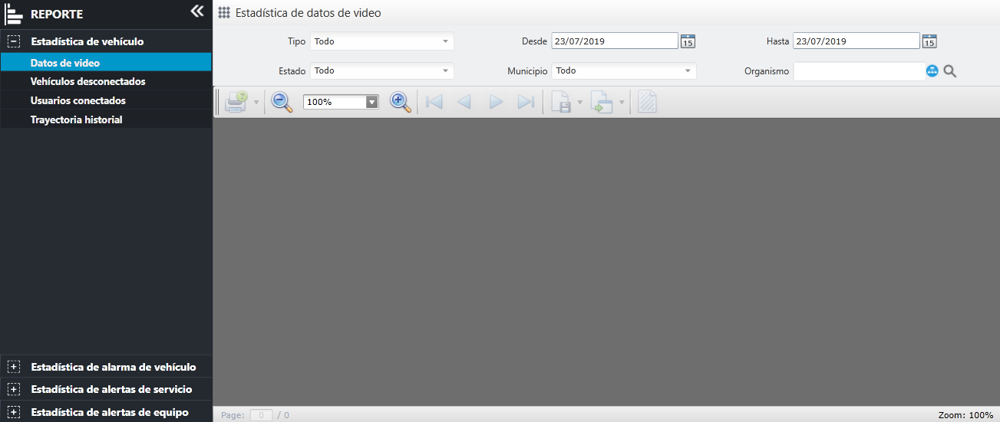
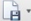
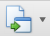

Datos de video
Cuente el dato visto por diferentes vehículos durante un cierto período de tiempo.
En la barra de menú de navegación izquierda, haga clic en para ingresar a la página de dato de video, como se muestra a continuación.

Fig 76 Estadísticas de dato de video
| 1. | configure las condiciones de consulta, el sistema admite consultas únicas y combinadas. |
| 2. | Haga clic en el botón 〖 |
| 3. | (Opcional) Haga clic 〖〗 en la flecha desplegable a la derecha del botón, seleccione el tipo de exportación, abra la página de configuración de parámetros, haga clic en el botón 〖OK〗 para configurar los parámetros correspondientes, abra el cuadro de diálogo guardar como, seleccione la ruta de guardado y haga clic en 〖OK〗 para exportar el informe. |
| 4. | (Opcional) Haga clic 〖〗 en la flecha desplegable a la derecha del botón, seleccione el tipo de exportación, abra la página de configuración de parámetros, haga clic en el botón 〖OK〗 para configurar los parámetros correspondientes, abra el cuadro de diálogo guardar como, seleccione la ruta de guardado y haga clic en 〖OK〗 para exportar el informe. |
| 5. | (Opcional) Haga clic 〖〗 en la flecha desplegable a la derecha del botón, seleccione el método de impresión, abra el cuadro de diálogo de impresión, configure los parámetros de impresión y haga clic en 〖Imprimir〗 para imprimir el informe. |
| 6. | (Opcional) Haga clic en el botón para 〖〗 abrir el cuadro de diálogo agregar filigrana, configure el estilo de filigrana y haga clic en 〖OK〗. La filigrana diseñada se agregará a la página del informe.
|